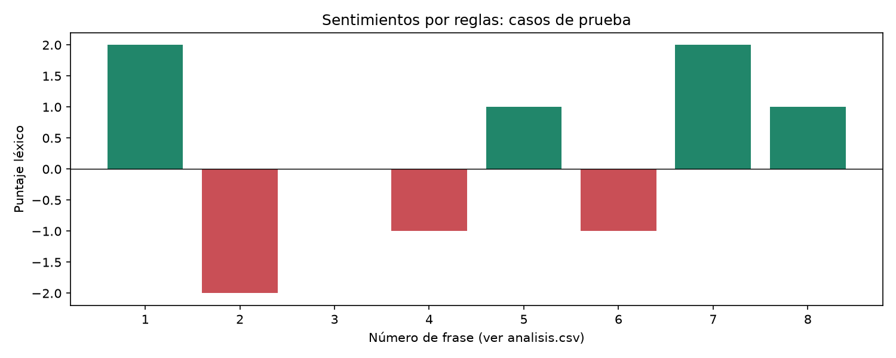

UNIDAD 1 / EVIDENCIA DE EJECUCIÓN2026-11-20T16:33:16.685133-06:00 · 0.74 s · EJECUTADO · código de salida 0
Comando ejecutado
python 08-talleres/03-nlp/sentimientos.py
Salida de la ejecución
positivo (+2): El taller fue excelente y divertido.
negativo (-2): La experiencia fue horrible y aburrida.
neutral (+0): La clase empieza a las ocho.
negativo (-1): No es bueno.
positivo (+1): No es malo.
negativo (-1): Bueno, pero aburrido.
positivo (+2): Fue increíble, ¡lo recomiendo!
positivo (+1): Sí, excelente... otra falla del sistema.
Limitación observada: el sarcasmo de la última frase se clasifica como positivo.
Salida completa: 08-3-nlp.txt · SHA-256 del código: 0c9334c0f74d584f3bf2…

sentimientos.png · archivo generado por la prácticaCaptura del reporte HTML construido a partir de la ejecución real. Consulta el código, el TXT y registro_ejecuciones.json para reproducirla.